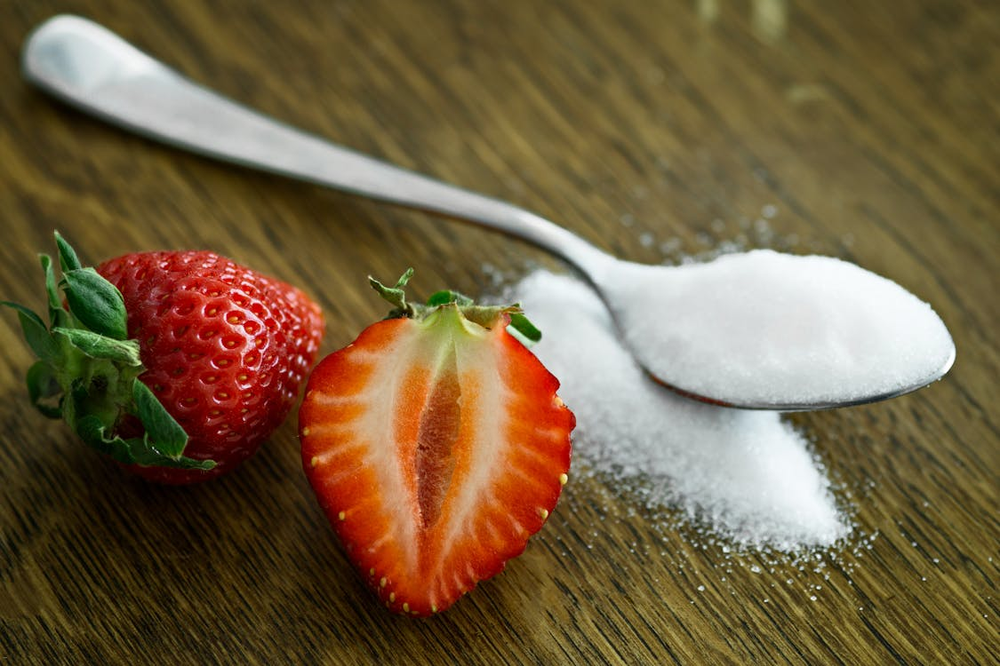
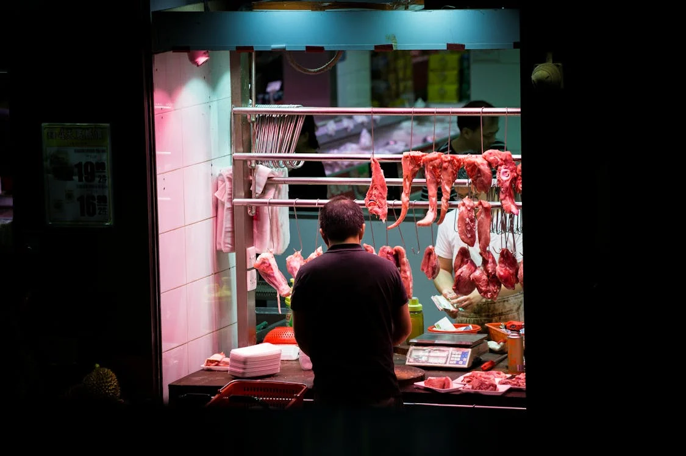

A túlfogyasztás jelentése
A modern világban egyre nagyobb problémát jelent a túlfogyasztás, amely nemcsak bolygónk erőforrásait meríti ki, hanem az egészségünkre is kedvezőtlen hatással van. Az élelmiszeripar hatalmas mennyiségű energiát, vizet és földterületet használ fel, miközben rengeteg hulladék keletkezik, és a káros kibocsátások is növekednek. Egy fenntarthatóbb jövő érdekében elengedhetetlen, hogy tudatosan válasszuk meg, mit és milyen mennyiségben fogyasztunk.
Milyen kapcsolat van a túlfogyasztás és az egészségügyi problémák között?
A túlfogyasztás, hozzáadott cukrok és ultra-feldolgozott élelmiszerek túlzott bevitele számos krónikus betegség kialakulásához hozzájárul. Ezek az élelmiszerek gyakran magas kalóriatartalmúak, ugyanakkor nélkülözhetik a szervezet számára szükséges alapvető tápanyagokat, mint például a fehérjéket, rostokat, vitaminokat és ásványi anyagokat. A magas cukortartalmú étrend elősegíti a súlygyarapodást és növeli az elhízás kockázatát, ami közvetlen kapcsolatban áll a 2-es típusú cukorbetegséggel és a metabolikus szindrómával. Emellett a túlzott cukorfogyasztás hozzájárulhat a magas vérnyomás, a magas koleszterinszint és a szívbetegségek kialakulásához, míg csökkentése segíthet mérsékelni ezen betegségek kockázatát. Kutatások kimutatták, hogy az ultra-feldolgozott élelmiszerek fogyasztása összefüggésbe hozható bizonyos daganatok, például vastagbélrák fokozott kockázatával. Egyre több bizonyíték utal arra, hogy az ultra-feldolgozott élelmiszerek fogyasztása kapcsolatba hozható a depresszióval, szorongással és más mentális zavarokkal. Összességében egyértelmű, hogy a túlzott cukorbevitel és az ultra-feldolgozott élelmiszerek rendszeres fogyasztása számos egészségügyi problémához vezethet, ezért ajánlott ezek bevitelét mérsékelni, és előnyben részesíteni a természetes, feldolgozatlan ételeket az egészség megőrzése érdekében.
Milyen személyes lépéseket tehetünk a túlfogyasztás csökkentése érdekében?
A túlfogyasztás csökkentése érdekében fontos a tudatos étrendtervezés, amely magában foglalja a friss, feldolgozatlan ételek előnyben részesítését és az ultra-feldolgozott termékek kerülését. Az adagok kontrollálása és a lassabb étkezés segíthet elkerülni a felesleges kalóriabevitelt, míg a fehérjében és rostokban gazdag ételek elősegítik a jóllakottság érzését. A tudatos vásárlás, például a bevásárlólista használata és az impulzusvásárlás elkerülése, szintén hozzájárulhat az egészségesebb étkezési szokások kialakításához. A megfelelő hidratáció és a rendszeres testmozgás támogatja az anyagcserét és az étvágy szabályozását, segítve az egészséges testsúly fenntartását és a krónikus betegségek megelőzését.

Milyen hatással van a húsipar és a túlzott húsfogyasztás a környezetre?
A húsipar és a túlzott húsfogyasztás jelentős hatással van a környezetre, mivel az állattartás és húsfeldolgozás nagy mennyiségű erőforrást igényel, és különböző környezeti problémákat okoz. A hús előállítása víz- és földterületet igényel, mivel az állatok takarmányozása és tenyésztése hatalmas erőforrásokat von el. Az ENSZ Élelmezésügyi és Mezőgazdasági Szervezete (FAO) szerint az állattenyésztés a globális vízfogyasztás 70%-áért felelős, és hozzájárul a vízhiányos területek problémáinak növekedéséhez. A takarmánytermesztés, mint a szója és kukorica, további erdőirtásokhoz és biodiverzitás csökkenéshez vezethet. A húsipar másik problémája az üvegházhatású gázok kibocsátása. A szarvasmarhák tartása jelentős metánkibocsátással jár, amely a globális metánkibocsátás 14%-áért felelős. A húsfogyasztás növekedése így gyorsítja a klímaváltozást. A húsfeldolgozás szennyvizet és szerves hulladékot termel, ami szennyezheti a vízkészleteket és a talajt. A takarmányban található vegyi anyagok, mint a nitrátok és peszticidek, hosszú távon káros hatással lehetnek az ökoszisztémákra. A húsfogyasztás csökkentése és a növényi alapú étrendek elterjedése segíthet a környezeti terhelés csökkentésében és fenntarthatóbb jövő kialakításában.
